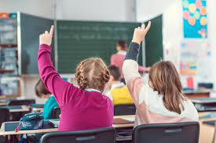

Der Montags-Check: Zwischen Tiefschlaf und Tafelbild
Der Start in die Woche fällt vielen Schülern schwer. Erfahre mehr über das Montags-Tief und Tipps, wie du es überwindest.
Mehr lesenNachrichten, Geschichten und Ereignisse aus der Schule.

Der Start in die Woche fällt vielen Schülern schwer. Erfahre mehr über das Montags-Tief und Tipps, wie du es überwindest.
Mehr lesen
Ein kurzer Blick auf den Schulhof genügt, um zu sehen: Smartphones sind überall. In den Pausen, zwischen den Stunden – die kleinen Bildschirme haben die Schulwelt erobert. Aber ist das wirklich nur harmloser Spaß?
Mehr lesen